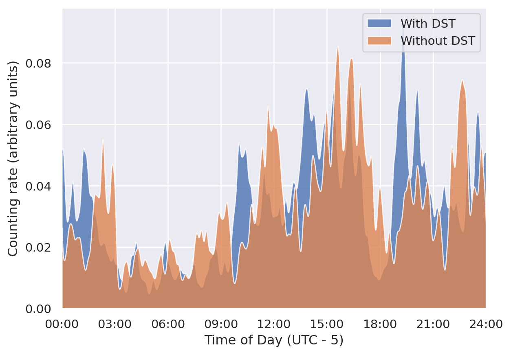
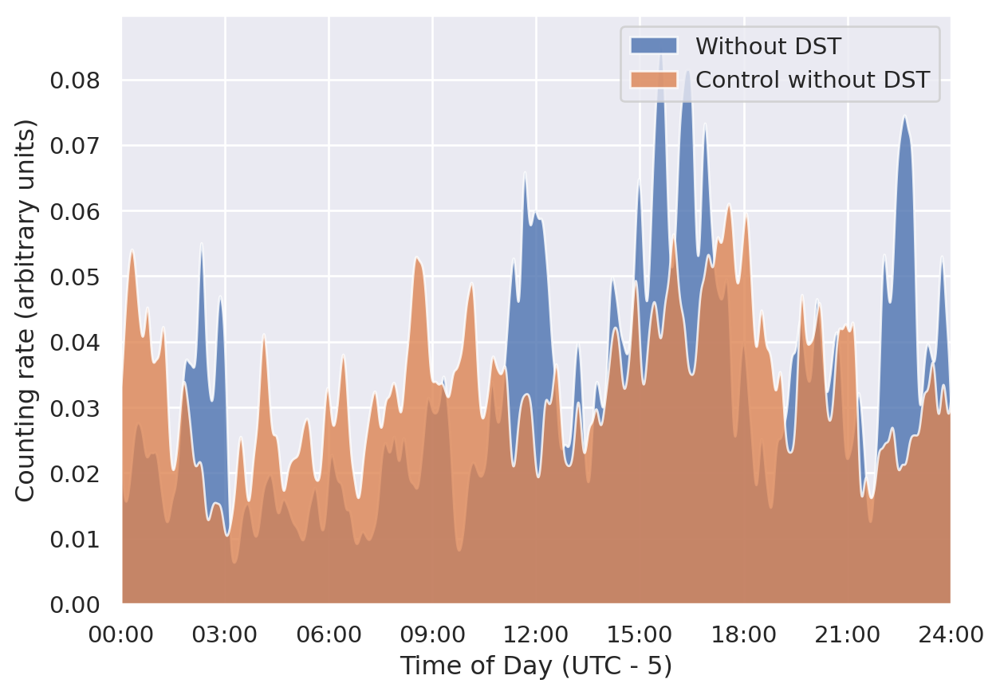
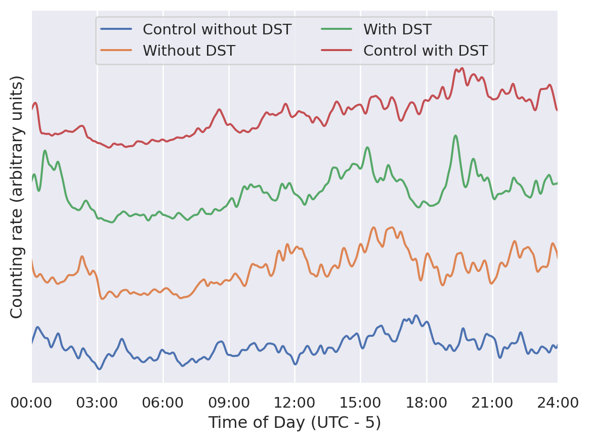
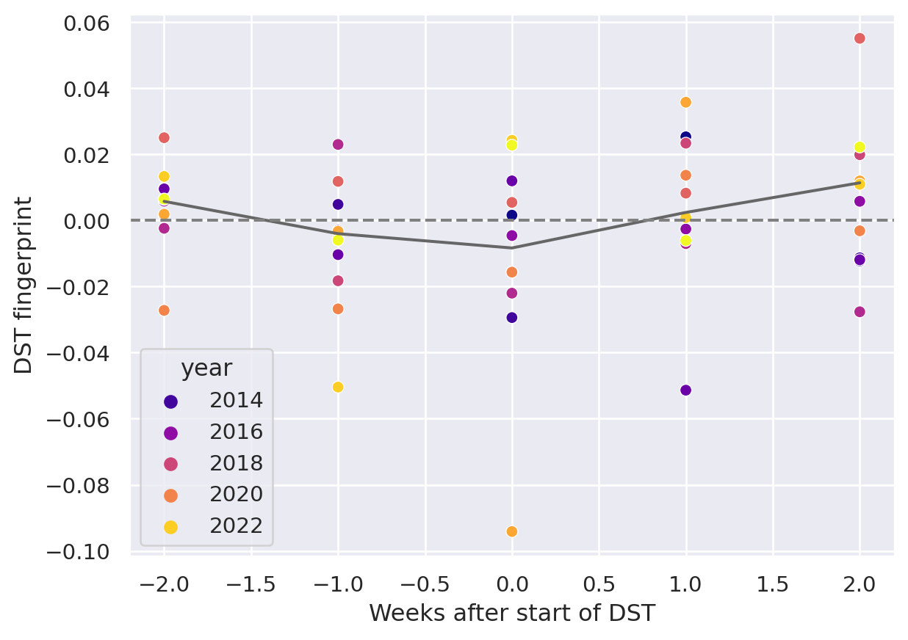
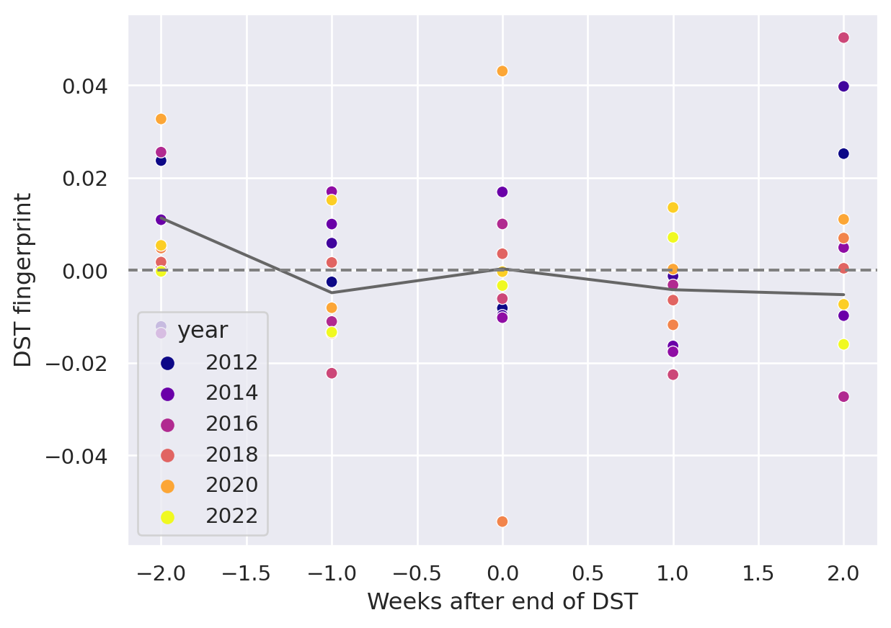

In a previous post I looked at the daily rhythm of r/counting, at what time of day the subreddit is most active, and how that has changed throughout the years. In this post I will try and answer the question that’s on nobody’s lips: Is it possible to see the effect of daylight saving time on the r/counting schedule?
Reddit stores the UTC timestamp for every count, so it’s possible to compare the counting activity just before the start of DST with the counting activity just afterwards, and see whether there’s a difference. If counts always follow the same pattern in local time, and all counters observe DST at the same time, then that should show up as a rigid shift in the data.
That’s the theory at least. As a spoiler, I’m doing something a bit different in this post, so it’s going to seem a lot more open-ended and exploratory than some of the other ones. When I started coding and writing I didn’t entirely know where I was going to end up, so you can think of this as going on a journey with me. Apart from answering the question, my goal with this post is to show you my general approach for dealing with these kinds of questions, and to highlight some of my thoughts along the way.
Before I can get started, there’s one more thing to get out of the way, namely the fact that DST occurs at different times (if at all) throughout the world. In this post, I’ve focussed exclusively on DST in the US & Canada1, where it starts on the second Sunday in March and ends on the first Sunday of November of each year2.
1 Apart from Hawaii and Arizona, which are weird
2 That hasn’t always been the DST rule, but it’s been the case for as long as r/c has existed
I’ll start off with some code to import the relevant packages and load the data.
Code for importing packages and loading data
from pathlib import Pathimport pandas as pdimport sqlite3import matplotlib.pyplot as pltimport numpy as npfrom rcounting import analysis, plots, unitsfrom rcounting.counters import apply_aliasfrom IPython.display import Markdownimport seaborn as snsfrom datetime import datetime, timedeltafrom calendar import timegmsns.set_theme()data_directory = Path("../data")db = sqlite3.connect(data_directory /"counting.sqlite")
A first model
To see the effect of DST, I can compare the time of day plots for the weeks just before and just after DST is introduced, and see if there are any obvious differences. To maximise the effect of I’ll focus only on counts that occurred Monday to Friday, since people’s weekday schedules should generally be more regular than their weekends.
To start with, I’m going to need some code to find when DST starts and ends on any given year
Finding the start of DST for every year
days = ["monday", "tuesday", "wednesday", "thursday", "friday", "saturday", "sunday"]def find_nth_weekday(year, month, weekday, n): d = datetime(year, month, 1+7* (n -1)) offset = (days.index(weekday.lower()) - d.weekday()) %7return d + timedelta(offset) + timedelta(hours=2)years =range(2012, 2024)dst_start = { year: timegm(find_nth_weekday(year, 3, "sunday", 2).timetuple()) for year in years}dst_end = { year: timegm(find_nth_weekday(year, 11, "sunday", 1).timetuple()) for year in years}
I’ll also define a bunch of constants that I’m going to need later.
And finally I’ll define some code for getting the raw data into slightly more manageable shape, and to calculate a counting rate over time from the timestamps of each count.
Code for getting the raw data into slightly more manageable shape.
With that out of the way, I’ll select the weeks just before the start of DST and the weeks just after the end of DST for every year in r/counting’s history. Then, I can plot the distribution of counts throughout the day for the week before and the week after the introduction of DST, and see how they differ:
Code
def query(x):return (f"select timestamp, username from comments where timestamp between "f"{x + OFFSET + minval * WEEK} and {x + OFFSET + maxval * WEEK} "f"order by timestamp")spring_all = wrangle(pd.concat([pd.read_sql(query(x), db) for x in dst_start.values()]))def mask(df):return ((df["date"].dt.weekday <5)& (-2<= df["week"])& (df["week"] <2))spring = spring_all[mask(spring_all)].copy()spring_kdes = generate_kdes(spring)week_map = {-2: "Control without DST",-1: "Without DST",0: "With DST",1: "Control with DST"}spring_kdes["week_name"] = spring_kdes["week"].map(week_map)for week in ["With DST", "Without DST"]: df = spring_kdes.query("week_name == @week") plt.fill_between(df["time"], df["rate"], alpha=0.8, label=week)ax = plt.gca()plots.make_time_axis(ax)ax.set_ylabel("Counting rate (arbitrary units)")ax.set_xlabel("Time of Day (UTC - 5)")ax.legend()plt.show()

The shape of the two plots is similar, and it looks like the plot with DST is generally leading the one without, as would be expected if one was just a rigid shift of the other. But it’s certainly not a perfect match, and it’s hard to see from the curves just how much the DST curve is leading.
I can try and see what the optimal shift of the DST curve would be to get it to match the curve without DST.
That’s a bit less than one hour, but it’s still suggestive. Apparently it is possoible to use the counting data to determine whether or not DST is currently active.
So, case closed, right?
Validating the model
Not so fast.
It could be that there’s a shift of one hour every week and DST has nothing to do with it! More seriously, there are other changes happening throughout the time period apart from DST; in the spring the days are getting longer, particularly the evenings, and maybe that’s what’s driving the change. And I haven’t at all looked at what happens when the clocks go back.
Adding more weeks
Let’s start by looking at what happens before DST is active. For the preceding analysis to be valid, the distribution of counts throughout the day would need to be basically the same in the two weeks before the start of DST.
Code
for week in ["Without DST", "Control without DST"]: df = spring_kdes.query("week_name == @week") plt.fill_between(df["time"], df["rate"], alpha=0.8, label=week)ax = plt.gca()plots.make_time_axis(ax)ax.set_ylabel("Counting rate (arbitrary units)")ax.set_xlabel("Time of Day (UTC - 5)")ax.legend()plt.show()

Hm. Those two curves might be slightly more aligned than the two with and without DST, but it’s not super clear. I can check the optimal shift
Code
_, optimal_shift = calculate_shifted_overlap(spring_kdes, "Without DST", "Control without DST")print(f"The optimal shift is {int(optimal_shift * BIN_TO_MINUTE)} minutes.")
The optimal shift is 98 minutes.
That’s an even bigger shift than the one that happened when DST was introduced! I can plot the four curves for the two weeks before and after DST together and see if there’s any obvious pattern.
If you didn’t have the legend, would you be able to tell which two of these curves were with DST and which were without? It seems that the variation from week to week is so big that any DST signal that might be present in the data is just swamped by all the noise.
Including the end of DST
I can try and see if including the data for the end of DST makes any difference
Code
autumn_all = wrangle(pd.concat([pd.read_sql(query(x), db) for x in dst_end.values()]), dst_end)autumn = autumn_all[mask(autumn_all)].copy()autumn["week"] =-1- autumn_all["week"]kdes = generate_kdes(pd.concat([spring, autumn]))kdes["week_name"] = kdes["week"].map(week_map)kdes["shifted_rate"] = kdes["rate"] + (kdes["week"] +2) * dyax = sns.lineplot(kdes, x="time", y="shifted_rate", hue="week_name")ax.legend_.set_title("Week")plots.make_time_axis(ax)ax.legend(loc="upper center", ncol=2)ax.set_ylabel("Counting rate (arbitrary units)")ax.set_xlabel("Time of Day (UTC - 5)")ax.set_ylim(0, 0.34)ax.set_yticks([])_, optimal_shift = calculate_shifted_overlap(kdes, "With DST", "Without DST")print(f"The optimal shift is {int(optimal_shift * BIN_TO_MINUTE)} minutes.")plt.show()
The optimal shift is 17 minutes.

Figure 1: The aggregated activity on r/counting in the two weeks on either side of the start/end of DST.
As before – would you be able to tell which of these graphs were with DST and which were without if you didn’t have the legend?
Summing up
The validation of the model has revealed that the activity on r/counting varies enough on a week to week basis that my initial assumptions are incorrect, and I can’t just treat the activity as a constant background with a DST signal on top. If I want to see the effect of DST, I’m going to have to come up with something more clever.
More Advanced Models
Disaggregating the years
What I did in the previous section was to aggregate the activity on r/counting across all the years it’s been active. After that, I honed in on specific weeks near the time of year when the clocks change, and asked if there was a rigid shift in the data.
This analysis revealed that the activity on r/counting isn’t stable over time. Maybe I’m losing information by aggregating all the years, and the signal would be clearer if I looked at each year separately.
Before I can make these comparisons I’m going to need a way of boiling down the information. Figure 1 and friends in the previous section showed that spotting the shift by eye is very difficult, and if the plot is further split into a new line for each year, it’s going to become completely unreadable.
What I need is a way of compressing each (week, year) pair to a single point, so that the plots are still legible even after disaggregating the years.
I can use the fac t that the DST offset is exactly one hour to accomplish just this: For each week, I can calculate how much the distribution resembles that of the week before, and I can also calculate how much the distribution resembles the 1 hour shifted distribution from the week before.
For most of the year, it should be the case that the unshifted distribution is more similar then the shifted distribution. But, for the week where the clocks change, the shifted distribution should be more similar. So, I can calculate the similarity of the lagged and shifted distribution, and subtract the similarity of just the lagged distribution, and I have a DST fingerprint. For most weeks, it should give a negative value, but for the week where the clocks change it should give a positive value.
Let’s see how it goes!
Code
def dst_fingerprint(df, period="spring"):"""Calculate the dst fingerprint for a single year""" transitions = dst_start if period =="spring"else dst_end x = df.resample("300s", on="date").size() rates = x.div(x.groupby(pd.Grouper(freq="1d")).transform("sum")).to_frame(name="rate") rates.index = rates.index - pd.to_datetime(rates.index.year.map(transitions), unit="s") shifted = rates.shift(freq="7d") shift ="-1h"if period =="spring"else"1h" dst_shifted = shifted.shift(freq=shift) dfs = []for df in [shifted, dst_shifted]: background = pd.Series((maxval - minval) * [np.nan], range(minval, maxval), name="delta") background.index.name ="date" f1 = pd.merge(rates, df, left_index=True, right_index=True)iflen(f1) !=0: f1["delta"] = (f1["rate_x"] - f1["rate_y"]) **2 series = f1.groupby(f1.index.days //7)["delta"].sum() background.loc[series.index] = series dfs.append(background)return dfs[1] - dfs[0]def multiple_dst_fingerprints(df, period="spring"): groups = df.groupby("year").apply(dst_fingerprint, period=period)return groups.reset_index().melt(id_vars="year")week_norm = spring_all.groupby(["year", "username"]).size() / spring_all.groupby("year").size()year_norm = spring_all.groupby("year").size() /len(spring_all)df = multiple_dst_fingerprints(spring_all)ax = sns.scatterplot(df, x="date", y="value", hue="year", palette="plasma")sns.lineplot( df.dropna().set_index(["year", "date"])["value"].mul(year_norm).groupby(level=1).sum(), color="0.4", legend=False)ax.axhline(0, color="0.5", linestyle="--")ax.set_xlabel("Weeks after start of DST")ax.set_ylabel("DST fingerprint")plt.show()

Hm. This isn’t very promising. The DST signal should show up in this plot in the fact that the points at 0 should lie significantly higher than all the others. That’s not the case at all.
I can do the same thing for when DST ends, just for good measure, to see if the signal shows up there:
Code
df = multiple_dst_fingerprints(autumn_all, "autumn")ax = sns.scatterplot(df, x="date", y="value", hue="year", palette="plasma")sns.lineplot( df.dropna().set_index(["year", "date"])["value"].mul(year_norm).groupby(level=1).sum(), color="0.4", legend=False)ax.axhline(0, color="0.5", linestyle="--")ax.set_xlabel("Weeks after end of DST")ax.set_ylabel("DST fingerprint")plt.show()

Unfortunately, that didn’t seem to show the signal either. Before giving up completely and abandoning this as a fool’s errand, there’s one or two more things I can try.
Disaggregating the different counters
Regulars of r/counting will know that it’s not the same people who count every week. If proof of this is needed, you can take a look at the top weekly counters list and see that it really isn’t just a repeat from week to week. Perhaps this is one cause of the lack of pattern in the counting times. It’s certainly possible to imagine a world where counters are perfectly regular, but the different schedules of different counters coupled with their different activity from week to week adds up to a huge mess.
So I can keep going with the disaggregation, and see if I get a clearer signal when we compare the activity of individual counters from week to week.
Looking at this graph almost makes me think I have a sign error in the way I’ve defined the DST fingerprint. I’ve double checked, and I don’t think it’s the case, but this certainly isn’t the peak at 0 I was hoping to see.
Looking only at the most regular counters
None of what I’ve tried so far has seemed to work. There’s one last thing I can try: I can find out which counters were most regular in the period leading up to the start of DST each year, and only include them in the calculations
To do that I’ll need to slightly rework the code from Section 1 for calculating the overlap between two different counting distributions. This will let me calculate the overlap for every counter for every year in the weeks around the onset of DST.
Then it’s just a bit of fidding with indices to find the 5 most regular counters two weeks before the start of DST for every year.
I’ve decided to work with the consistency score rather than the DST fingerprint3, because I wanted to highlight the effect of the selection I’ve made. You can see on the graph that the score two weeks before the start of DST is signficantly higher than all the other weeks, and in particular the least consistent year for week -2 is much more consistent tht the least consistent year for all the other weeks.
3 The two scores behave similarly, with the exception that for the consistency score, we’d expected DST to show up as a dip at zero, rather than a peak.
This apparent result is just an artefact of the way I’ve selected the data: I’ve limited my search to people who were very consistent two weeks before the onset of DST, so it’s no surprise that the consistency is high here. The fact that the consistency is lower in the following weeks is due to a regression towards the mean.
That statistical artefact aside, it doesn’t seem that this analysis has brought me any closer to finding a clear sign of DST in the counting data. With the consistency score, the sign of DST is a dip at 0, so the fact that the least consistent week is the week DST starts is suggestive. But it’s not what I’d call proof.
Conclusion
If you want to find out whether or not the US currently has DST, then looking at the comments on r/counting is not a viable method for doing so. I would suggest just googling it instead.
This post ended up being much longer than expected (and a fair bit longer than the reddit comment that it’s based on), mainly because I’ve had to change the conclusion along the way.
In the original, and in my first draft, I wasn’t as thorough with my robustness analysis as I’ve been here. That meant that I was more convinced by the hints of a DST signal in the data, and the conclusion reflected that. Unfortunately, this post has demonstrated that it just isn’t there. On the positive side, the post has also demonstrated the value of checking assumptions, validating any model that you might come up with, and generally having a healthy dose of skepticism towards any new discoveries – especially your own.
And that’s perhaps as good a place as any to end.
Until next time!
Source Code
---title: "Daylight Saving Time: On modelling and robustness"---In a [previous post](https://cutonbuminband.github.io/counting-analysis/time.html) I looked at the daily rhythm of [r/counting](http://www.reddit.com/r/counting), at what time of day the subreddit is most active, and how that has changed throughout the years. In this post I will try and answer the question that's on nobody's lips: Is it possible to see the effect of daylight saving time on the r/counting schedule?Reddit stores the UTC timestamp for every count, so it's possible to compare the counting activity just before the start of DST with the counting activity just afterwards, and see whether there's a difference. If counts always follow the same pattern in local time, and all counters observe DST at the same time, then that should show up as a rigid shift in the data.That's the theory at least. As a spoiler, I'm doing something a bit different in this post, so it's going to seem a lot more open-ended and exploratory than some of the other ones. When I started coding and writing I didn't entirely know where I was going to end up, so you can think of this as going on a journey with me. Apart from answering the question, my goal with this post is to show you my general approach for dealing with these kinds of questions, and to highlight some of my thoughts along the way.Before I can get started, there's one more thing to get out of the way, namely the fact that DST occurs at different times (if at all) throughout the world. In this post, I've focussed exclusively on DST in the US & Canada[^1], where it starts on the second Sunday in March and ends on the first Sunday of November of each year[^2].I'll start off with some code to import the relevant packages and load the data.```{python}#| code-fold: true#| code-summary: "Code for importing packages and loading data"from pathlib import Pathimport pandas as pdimport sqlite3import matplotlib.pyplot as pltimport numpy as npfrom rcounting import analysis, plots, unitsfrom rcounting.counters import apply_aliasfrom IPython.display import Markdownimport seaborn as snsfrom datetime import datetime, timedeltafrom calendar import timegmsns.set_theme()data_directory = Path("../data")db = sqlite3.connect(data_directory /"counting.sqlite")```# A first modelTo see the effect of DST, I can compare the time of day plots for the weeks just before and just after DST is introduced, and see if there are any obvious differences. To maximise the effect of I'll focus only on counts that occurred Monday to Friday, since people's weekday schedules should generally be more regular than their weekends.To start with, I'm going to need some code to find when DST starts and ends on any given year```{python}#| code-summary: "Finding the start of DST for every year"days = ["monday", "tuesday", "wednesday", "thursday", "friday", "saturday", "sunday"]def find_nth_weekday(year, month, weekday, n): d = datetime(year, month, 1+7* (n -1)) offset = (days.index(weekday.lower()) - d.weekday()) %7return d + timedelta(offset) + timedelta(hours=2)years =range(2012, 2024)dst_start = { year: timegm(find_nth_weekday(year, 3, "sunday", 2).timetuple()) for year in years}dst_end = { year: timegm(find_nth_weekday(year, 11, "sunday", 1).timetuple()) for year in years}```I'll also define a bunch of constants that I'm going to need later.```{python}#| code-fold: true#| code-summary: "Defining constants for later use"WEEK =7*24* units.HOUROFFSET =5* units.HOURBIN_WIDTH =30nbins =int(units.DAY / BIN_WIDTH)minval, maxval =-3, 3BIN_TO_MINUTE = (BIN_WIDTH /60)time_axis = np.linspace(0, units.DAY, nbins, endpoint=False) + BIN_WIDTH /2dy =0.07```And finally I'll define some code for getting the raw data into slightly more manageable shape, and to calculate a counting rate over time from the timestamps of each count.```{python}#| code-summary: "Code for getting the raw data into slightly more manageable shape."def wrangle(data, week_map=dst_start): data = data.reset_index(drop=True) data["username"] = data["username"].apply(apply_alias) data["timestamp"] = data["timestamp"] - OFFSET data["date"] = pd.to_datetime(data["timestamp"], unit="s") data['time'] = (data['timestamp']) % units.DAY data["week"] = (np.floor((data["timestamp"]- pd.to_datetime(data["timestamp"], unit="s").dt.year.map(week_map))/ WEEK) .astype(int)) data["year"] = data["date"].dt.yearreturn datadef generate_kdes(df): n_weeks =len(df["week"].unique()) kdes = (df .groupby("week")["time"] .apply(lambda x: pd.Series(analysis.fft_kde( x, nbins, kernel="normal_distribution", sigma=0.02)[1] * nbins)) .reset_index()[["week", "time"]]) kdes["time_axis"] = np.hstack(n_weeks*[time_axis]) kdes.columns = ["week", "rate", "time"]return kdes```With that out of the way, I'll select the weeks just before the start of DST and the weeks just after the end of DST for every year in r/counting's history. Then, I can plot the distribution of counts throughout the day for the week before and the week after the introduction of DST, and see how they differ:```{python}def query(x):return (f"select timestamp, username from comments where timestamp between "f"{x + OFFSET + minval * WEEK} and {x + OFFSET + maxval * WEEK} "f"order by timestamp")spring_all = wrangle(pd.concat([pd.read_sql(query(x), db) for x in dst_start.values()]))def mask(df):return ((df["date"].dt.weekday <5)& (-2<= df["week"])& (df["week"] <2))spring = spring_all[mask(spring_all)].copy()spring_kdes = generate_kdes(spring)week_map = {-2: "Control without DST",-1: "Without DST",0: "With DST",1: "Control with DST"}spring_kdes["week_name"] = spring_kdes["week"].map(week_map)for week in ["With DST", "Without DST"]: df = spring_kdes.query("week_name == @week") plt.fill_between(df["time"], df["rate"], alpha=0.8, label=week)ax = plt.gca()plots.make_time_axis(ax)ax.set_ylabel("Counting rate (arbitrary units)")ax.set_xlabel("Time of Day (UTC - 5)")ax.legend()plt.show()```The shape of the two plots is similar, and it looks like the plot with DST is generally leading the one without, as would be expected if one was just a rigid shift of the other. But it's certainly not a perfect match, and it's hard to see from the curves just how much the DST curve is leading.I can try and see what the optimal shift of the DST curve would be to get it to match the curve without DST.```{python}def calculate_shifted_overlap(df, week1, week2): fixed = df.loc[df["week_name"] == week2, "rate"].to_numpy() rotating = df.loc[df["week_name"] == week1, "rate"].to_numpy() norm = np.trapz(fixed * rotating, x=time_axis) shifts = [np.trapz(fixed * np.roll(rotating, i), x=time_axis) / norm for i inrange(len(fixed))] optimal_shift = (np.argmax(shifts) + nbins /2) % nbins - nbins/2return shifts, optimal_shiftshifts, optimal_shift = calculate_shifted_overlap(spring_kdes, "With DST","Without DST")plt.plot(shifts)plt.xlim(0, len(shifts))ax = plt.gca()ticks, labels =zip(*[(x *120, f"{x:02d}:00") for x inrange(0, 25, 3)])ax.set_xticks(ticks)ax.set_xticklabels(labels)print(f"The optimal shift is {int(optimal_shift * BIN_TO_MINUTE)} minutes.")ax.set_xlabel("Shift (hours)")ax.set_ylabel("Similarity score")plt.show()```That's a bit less than one hour, but it's still suggestive. Apparently it *is* possoible to use the counting data to determine whether or not DST is currently active.So, case closed, right?# Validating the modelNot so fast.It could be that there's a shift of one hour every week and DST has nothing to do with it! More seriously, there are other changes happening throughout the time period apart from DST; in the spring the days are getting longer, particularly the evenings, and maybe that's what's driving the change. And I haven't at all looked at what happens when the clocks go back.## Adding more weeksLet's start by looking at what happens before DST is active. For the preceding analysis to be valid, the distribution of counts throughout the day would need to be basically the same in the two weeks before the start of DST.```{python}for week in ["Without DST", "Control without DST"]: df = spring_kdes.query("week_name == @week") plt.fill_between(df["time"], df["rate"], alpha=0.8, label=week)ax = plt.gca()plots.make_time_axis(ax)ax.set_ylabel("Counting rate (arbitrary units)")ax.set_xlabel("Time of Day (UTC - 5)")ax.legend()plt.show()```Hm. Those two curves might be slightly more aligned than the two with and without DST, but it's not super clear. I can check the optimal shift```{python}_, optimal_shift = calculate_shifted_overlap(spring_kdes, "Without DST", "Control without DST")print(f"The optimal shift is {int(optimal_shift * BIN_TO_MINUTE)} minutes.")```That's an even bigger shift than the one that happened when DST was introduced! I can plot the four curves for the two weeks before and after DST together and see if there's any obvious pattern.```{python}spring_kdes["shifted_rate"] = spring_kdes["rate"] + (spring_kdes["week"] +2) * dyax = sns.lineplot(spring_kdes, x="time", y="shifted_rate", hue="week_name")ax.legend_.set_title("Week")plots.make_time_axis(ax)ax.legend(loc="upper center", ncol=2)ax.set_ylabel("Counting rate (arbitrary units)")ax.set_xlabel("Time of Day (UTC - 5)")ax.set_ylim(0, 0.34)plt.show()```If you didn't have the legend, would you be able to tell which two of these curves were with DST and which were without? It seems that the variation from week to week is so big that any DST signal that might be present in the data is just swamped by all the noise.## Including the end of DSTI can try and see if including the data for the end of DST makes any difference```{python}#| label: fig-autumn-kdes#| fig-cap: The aggregated activity on r/counting in the two weeks on either side of the start/end of DST.autumn_all = wrangle(pd.concat([pd.read_sql(query(x), db) for x in dst_end.values()]), dst_end)autumn = autumn_all[mask(autumn_all)].copy()autumn["week"] =-1- autumn_all["week"]kdes = generate_kdes(pd.concat([spring, autumn]))kdes["week_name"] = kdes["week"].map(week_map)kdes["shifted_rate"] = kdes["rate"] + (kdes["week"] +2) * dyax = sns.lineplot(kdes, x="time", y="shifted_rate", hue="week_name")ax.legend_.set_title("Week")plots.make_time_axis(ax)ax.legend(loc="upper center", ncol=2)ax.set_ylabel("Counting rate (arbitrary units)")ax.set_xlabel("Time of Day (UTC - 5)")ax.set_ylim(0, 0.34)ax.set_yticks([])_, optimal_shift = calculate_shifted_overlap(kdes, "With DST", "Without DST")print(f"The optimal shift is {int(optimal_shift * BIN_TO_MINUTE)} minutes.")plt.show()```As before – would you be able to tell which of these graphs were with DST and which were without if you didn't have the legend?## Summing upThe validation of the model has revealed that the activity on r/counting varies enough on a week to week basis that my initial assumptions are incorrect, and I can't just treat the activity as a constant background with a DST signal on top. If I want to see the effect of DST, I'm going to have to come up with something more clever.# More Advanced Models## Disaggregating the yearsWhat I did in the previous section was to aggregate the activity on r/counting across all the years it's been active. After that, I honed in on specific weeks near the time of year when the clocks change, and asked if there was a rigid shift in the data.This analysis revealed that the activity on r/counting isn't stable over time. Maybe I'm losing information by aggregating all the years, and the signal would be clearer if I looked at each year separately.Before I can make these comparisons I'm going to need a way of boiling down the information. @fig-autumn-kdes and friends in the previous section showed that spotting the shift by eye is very difficult, and if the plot is further split into a new line for each year, it's going to become completely unreadable.What I need is a way of compressing each (week, year) pair to a single point, so that the plots are still legible even after disaggregating the years.I can use the fac t that the DST offset is exactly one hour to accomplish just this: For each week, I can calculate how much the distribution resembles that of the week before, and I can also calculate how much the distribution resembles the 1 hour *shifted* distribution from the week before.For most of the year, it should be the case that the unshifted distribution is more similar then the shifted distribution. But, for the week where the clocks change, the shifted distribution should be more similar. So, I can calculate the similarity of the lagged and shifted distribution, and subtract the similarity of just the lagged distribution, and I have a DST fingerprint. For most weeks, it should give a negative value, but for the week where the clocks change it should give a positive value.Let's see how it goes!```{python}def dst_fingerprint(df, period="spring"):"""Calculate the dst fingerprint for a single year""" transitions = dst_start if period =="spring"else dst_end x = df.resample("300s", on="date").size() rates = x.div(x.groupby(pd.Grouper(freq="1d")).transform("sum")).to_frame(name="rate") rates.index = rates.index - pd.to_datetime(rates.index.year.map(transitions), unit="s") shifted = rates.shift(freq="7d") shift ="-1h"if period =="spring"else"1h" dst_shifted = shifted.shift(freq=shift) dfs = []for df in [shifted, dst_shifted]: background = pd.Series((maxval - minval) * [np.nan], range(minval, maxval), name="delta") background.index.name ="date" f1 = pd.merge(rates, df, left_index=True, right_index=True)iflen(f1) !=0: f1["delta"] = (f1["rate_x"] - f1["rate_y"]) **2 series = f1.groupby(f1.index.days //7)["delta"].sum() background.loc[series.index] = series dfs.append(background)return dfs[1] - dfs[0]def multiple_dst_fingerprints(df, period="spring"): groups = df.groupby("year").apply(dst_fingerprint, period=period)return groups.reset_index().melt(id_vars="year")week_norm = spring_all.groupby(["year", "username"]).size() / spring_all.groupby("year").size()year_norm = spring_all.groupby("year").size() /len(spring_all)df = multiple_dst_fingerprints(spring_all)ax = sns.scatterplot(df, x="date", y="value", hue="year", palette="plasma")sns.lineplot( df.dropna().set_index(["year", "date"])["value"].mul(year_norm).groupby(level=1).sum(), color="0.4", legend=False)ax.axhline(0, color="0.5", linestyle="--")ax.set_xlabel("Weeks after start of DST")ax.set_ylabel("DST fingerprint")plt.show()```Hm. This isn't very promising. The DST signal should show up in this plot in the fact that the points at 0 should lie significantly higher than all the others. That's not the case at all.I can do the same thing for when DST ends, just for good measure, to see if the signal shows up there:```{python}df = multiple_dst_fingerprints(autumn_all, "autumn")ax = sns.scatterplot(df, x="date", y="value", hue="year", palette="plasma")sns.lineplot( df.dropna().set_index(["year", "date"])["value"].mul(year_norm).groupby(level=1).sum(), color="0.4", legend=False)ax.axhline(0, color="0.5", linestyle="--")ax.set_xlabel("Weeks after end of DST")ax.set_ylabel("DST fingerprint")plt.show()```Unfortunately, that didn't seem to show the signal either. Before giving up completely and abandoning this as a fool's errand, there's one or two more things I can try.## Disaggregating the different countersRegulars of r/counting will know that it's not the same people who count every week. If proof of this is needed, you can take a look at the top weekly counters list and see that it really isn't just a repeat from week to week. Perhaps this is one cause of the lack of pattern in the counting times. It's certainly possible to imagine a world where counters are perfectly regular, but the different schedules of different counters coupled with their different activity from week to week adds up to a huge mess.So I can keep going with the disaggregation, and see if I get a clearer signal when we compare the activity of individual counters from week to week.```{python}def username_fingerprint(df, period="spring"): fingerprint = (df.groupby(["year", "username"]) .apply(dst_fingerprint, period=period) .reset_index() .melt(id_vars=["year", "username"], var_name="week") .set_index(["year", "username", "week"])["value"])return fingerprintfingerprints = username_fingerprint(spring_all)df = ( fingerprints.dropna() .mul(week_norm) .groupby(level=[0, 2]) .sum() .reset_index(name="fingerprint"))ax = sns.scatterplot(df, x="week", y="fingerprint", hue="year", palette="plasma")sns.lineplot( df.set_index(["year", "week"])["fingerprint"].mul(year_norm).groupby(level=1).sum(), ax=ax, color="0.4", legend=False,)ax.axhline(0, color="0.5", linestyle="--")ax.set_xlabel("Weeks after start of DST")ax.set_ylabel("DST fingerprint")plt.show()```Looking at this graph almost makes me think I have a sign error in the way I've defined the DST fingerprint. I've double checked, and I don't think it's the case, but this certainly isn't the peak at 0 I was hoping to see.## Looking only at the most regular countersNone of what I've tried so far has seemed to work. There's one last thing I can try: I can find out which counters were most regular in the period leading up to the start of DST each year, and only include them in the calculationsTo do that I'll need to slightly rework the code from [*Section 1*]{.spurious-link target="A first model"} for calculating the overlap between two different counting distributions. This will let me calculate the overlap for every counter for every year in the weeks around the onset of DST.Then it's just a bit of fidding with indices to find the 5 most regular counters two weeks before the start of DST for every year.```{python}def similarity_score(df): kdes = generate_kdes(df) groups = kdes.groupby("week")["rate"] norm = groups.transform(np.linalg.norm) kdes["rate"] /= norm overlaps = ( (kdes.set_index(["week", "time"]).groupby("time")["rate"].diff() **2) .groupby(level=0) .sum() )return1- overlaps /2scores = spring_all.groupby(["year", "username"]).apply(similarity_score)scores = scores[scores !=1]counters = ( scores .reset_index() .query("week== -2") .sort_values(["year", "rate"], ascending=False) .groupby("year") .head(5) .set_index(["year", "username"]) .index)subset = spring_all.set_index(["year", "username"]).loc[counters]```With that out of the way, I can plot the average similarity score for each year and week```{python}week_norm = subset.groupby(["year", "username"]).size() / subset.groupby("year").size()year_norm = subset.groupby("year").size() /len(subset)similarity = ( scores.reset_index(level=2) .loc[counters] .set_index("week", append=True)["rate"] .mul(week_norm) .groupby(level=[0, 2]) .sum() .reset_index(name="similarity"))ax = sns.scatterplot(similarity, x="week", y="similarity", hue="year", palette="plasma")sns.lineplot( ( similarity.set_index(["year", "week"])["similarity"] .mul(year_norm) .groupby("week") .sum() ), color="0.4", ax=ax, legend=False)ax.set_xlabel("Weeks after start of DST")ax.set_ylabel("Week consistency score")plt.show()```I've decided to work with the consistency score rather than the DST fingerprint[^3], because I wanted to highlight the effect of the selection I've made. You can see on the graph that the score two weeks before the start of DST is signficantly higher than all the other weeks, and in particular the least consistent year for week -2 is much more consistent tht the least consistent year for all the other weeks.This apparent result is just an artefact of the way I've selected the data: I've limited my search to people who were very consistent two weeks before the onset of DST, so it's no surprise that the consistency is high here. The fact that the consistency is lower in the following weeks is due to a regression towards the mean.That statistical artefact aside, it doesn't seem that this analysis has brought me any closer to finding a clear sign of DST in the counting data. With the consistency score, the sign of DST is a dip at 0, so the fact that the least consistent week is the week DST starts is suggestive. But it's not what I'd call proof.# ConclusionIf you want to find out whether or not the US currently has DST, then looking at the comments on r/counting is not a viable method for doing so. I would suggest just googling it instead.This post ended up being much longer than expected (and a fair bit longer than the reddit comment that it's based on), mainly because I've had to change the conclusion along the way.In the original, and in my first draft, I wasn't as thorough with my robustness analysis as I've been here. That meant that I was more convinced by the hints of a DST signal in the data, and the conclusion reflected that. Unfortunately, this post has demonstrated that it just isn't there. On the positive side, the post has also demonstrated the value of checking assumptions, validating any model that you might come up with, and generally having a healthy dose of skepticism towards any new discoveries – especially your own.And that's perhaps as good a place as any to end.Until next time![^1]: Apart from Hawaii and Arizona, which are weird[^2]: That hasn't always been the DST rule, but it's been the case for as long as r/c has existed[^3]: The two scores behave similarly, with the exception that for the consistency score, we'd expected DST to show up as a dip at zero, rather than a peak.